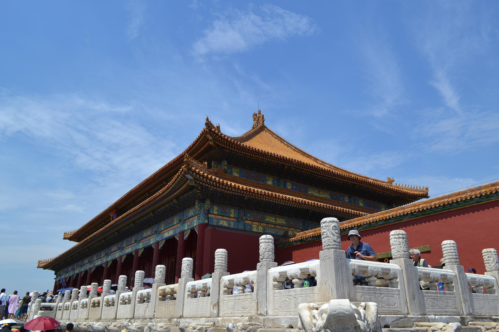
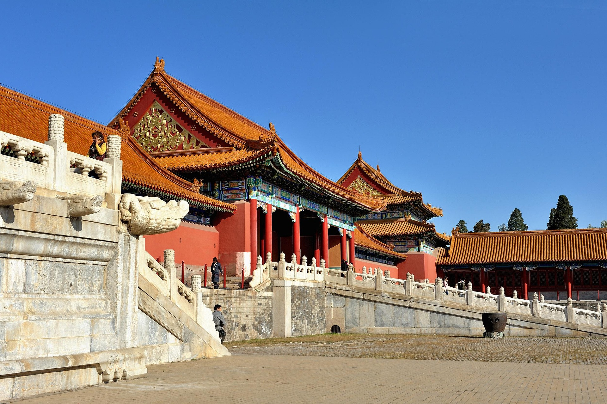
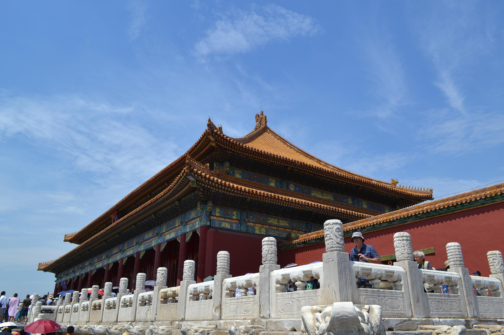
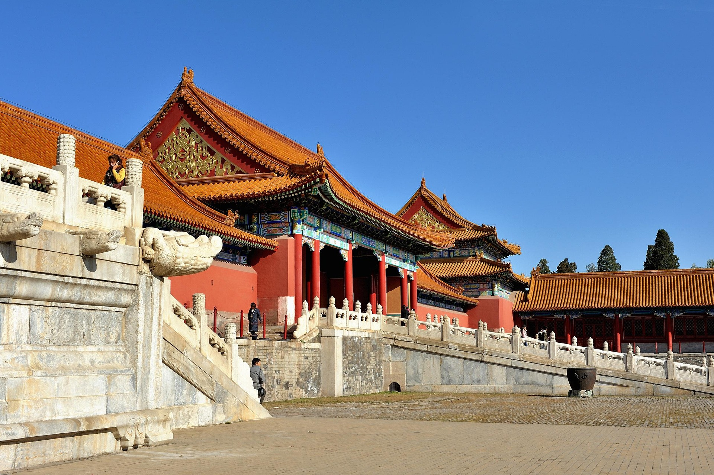

北京故宫
 



历史沿革
北京故宫（The Imperial Palace ），位于中国北京市，是明清两代的皇家宫殿， 旧称紫禁城，位于北京中轴线的中心。以三大殿为中心，占地面积约72万平方米， 建筑面积约15万平方米，有大小宫殿七十多座，相传故宫一共有9999.5间房屋， 实际据1973年专家现场测量故宫有房间8707间 。 故宫于明永乐四年（1406年）开始建设，以南京故宫为蓝本营建，到永乐十八年（1420年）建成， 成为明清两朝二十四位皇帝的皇宫。民国十四年（1925年）10月10日，故宫博物院正式成立开幕。
建筑成就
北京故宫南北长961米，东西宽753米，四面围有高10米的城墙，城外有宽52米的护城河。 故宫有四座城门，南面为午门，北面为神武门，东面为东华门，西面为西华门。城墙的四角 各有一座风姿绰约的角楼，民间有九梁十八柱七十二条脊之说，形容其结构的复杂。 故宫内的建筑分为外朝和内廷两部分。外朝的中心为太和殿、中和殿、保和殿，统称三大殿，是国家 举行大典礼的地方。三大殿左右两翼辅以文华殿、武英殿两组建筑。内廷的中心是乾清宫、交泰殿、 坤宁宫，统称后三宫，是皇帝和皇后居住的正宫。其后为御花园。后三宫两侧排列着东、西六宫，是后 妃们居住休息的地方。东六宫东侧是天穹宝殿等佛堂建筑，西六宫西侧是中正殿等佛堂建筑。外朝、内 廷之外还有外东路、外西路两部分建筑。
核心特色
故宫是世界上现存规模最大、保存最为完整的木质结构古建筑群之一。 1961年3月4日，北京故宫被公布为第一批全国重点文物保护单位。 1987年被列为世界文化遗产。